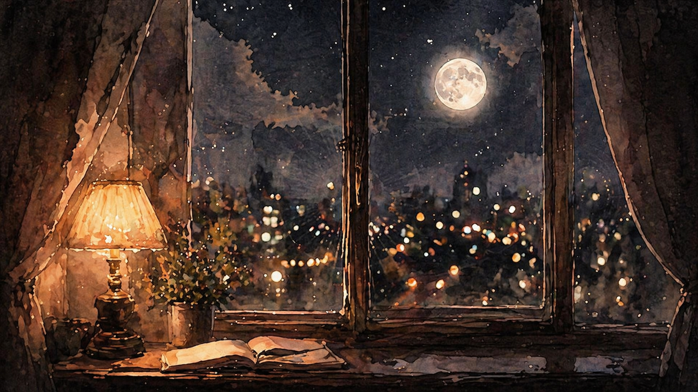

This generation is so fond of staying up late, not to mention I am one of them. Sleeping at 11 p.m. was my habit too, but that's more of a forced discipline habit rather than a natural one. I'd say we are also the generation who loves to isolate themselves the most. We need more, we got more empathy than others.
Led by all the different experiences of life, we end up growing this bittersweet relationship with life. Daytime becomes something we have to pass because we don't have any other choices. Body too tired to get up, mind already calculating what pain we have to go through for the day. The worst of all, what people we need to face today.
A day full of chaos, even at home it doesn't feel like home either. Just a place we live in cause people were kind enough to let us live and feed us. Something worth being grateful for, other than that, facts like arguments and being disappointed at us for our existence as a whole or just how we are living and eating others' hard-earned money and doing nothing about it. And the list goes on.
Then the night comes. We slowly get tired from the day and doze off. And finally, some moment of peace and quiet.
The time when you can actually hear yourself, sit in silence, all the noise gone. Do something you like, maybe not everything, but at least you can breathe in peace. See what you want instead of what's expected of you. That's the biggest comfort of the day. Maybe for a few hours, but at the cost of our sleep and health.
Those hours are the only window we know, we can know and be ourselves and feel our skin away from the weight of people.

Also, I think these hours, which I call the moon hours, are the ones that let us be us and know what we want from our lives. That at the same time makes us rebellious, because to other people, you're supposed to have a life that they want you to have, that benefits them.
So they are not actually angry that instead of being their puppet, you are building your life your own way. The disappointment comes from the realization that they don't have much control over your life, or you as a person, and that's okay.
The same people are gonna clap too when you actually become happy, or maybe become jealous. At least, you got yourself back, just at the cost of them losing control over you. And that's actually a win.
We don't owe our life to any other person. Things might look scary but it's worth the risk.
don't forget to moon gaze 😊 we're gonna look at the same moon, with a bunch of hope.